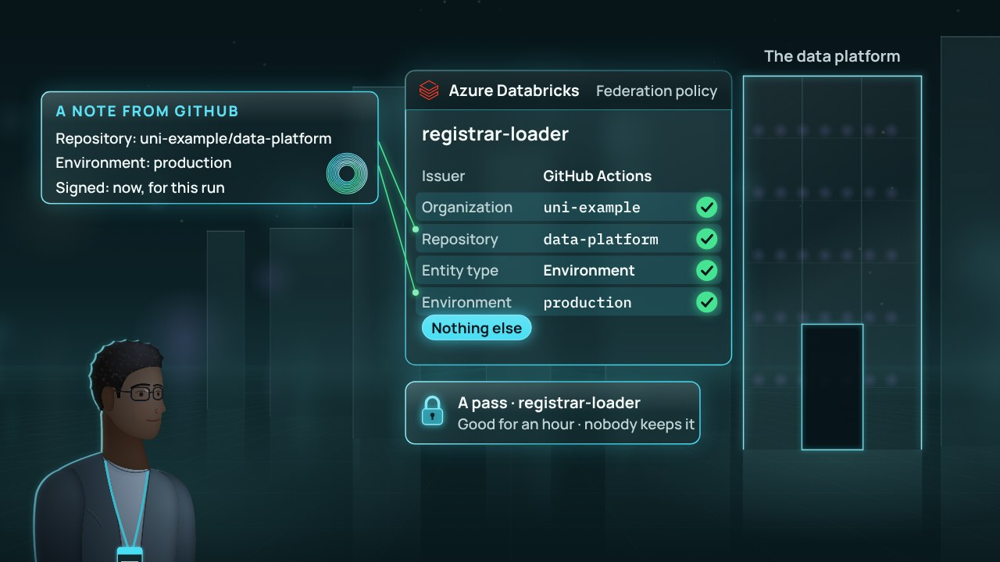
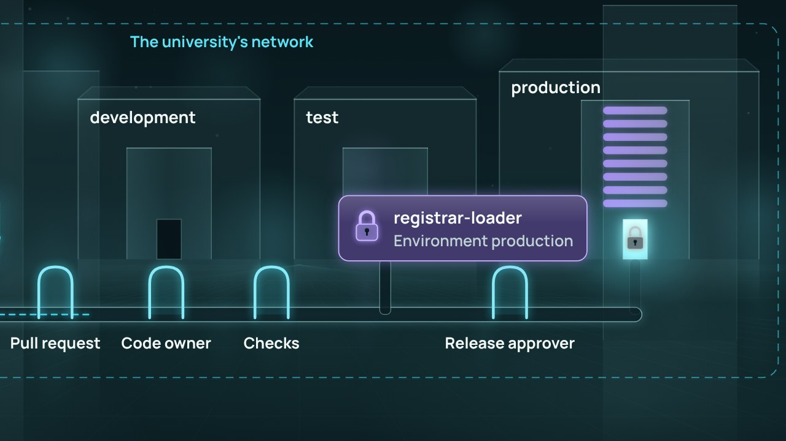

← Anterior · Película 6 de 9
Cargas sin secretos
Un proceso que entra como sí mismo: un nombre propio, una nota firmada en cada despliegue y una contraseña en un almacén.
Temas › Protección de datos y privacidad › Cerraduras antes que los datos
Los archivos de producción están en el almacenamiento de Azure, y Unity Catalog debe ser su único camino. Sam Okafor encuentra nueve rodeos: dos llaves de la cuenta, un enlace firmado con una y seis personas con un rol en el almacenamiento. Todas las puertas dan a internet. Cierra todas menos una.
Borrador · El autor aún no lo ha revisado, así que algunos detalles pueden cambiar.
Pausa para pensar está activada: la película se detiene con una pregunta al final de los capítulos.
Descargar el video (en inglés)Archivos de subtítulosLeer el guion (en inglés)
¿Y ahora?
Las tres preguntas de Pausa para pensar, para una clase o un equipo. Abre una para ver la respuesta.
La película muestra Azure Databricks y Azure Storage como los mostraba su documentación el 5 de noviembre de 2026. Estas son las páginas que sigue, una por cada camino que cierra y por la llave; enlaces revisados el 10 de noviembre de 2026.
Película 7 de 9.

← Anterior · Película 6 de 9
Un proceso que entra como sí mismo: un nombre propio, una nota firmada en cada despliegue y una contraseña en un almacén.

Siguiente · Película 8 de 9 →
Reglas fijadas antes del cambio, alguien que no lo escribió lo revisa, y una máquina despliega solo tras un segundo sí.